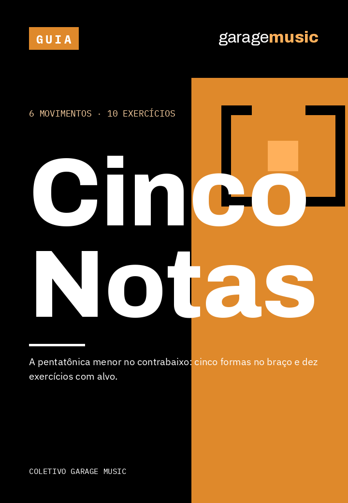
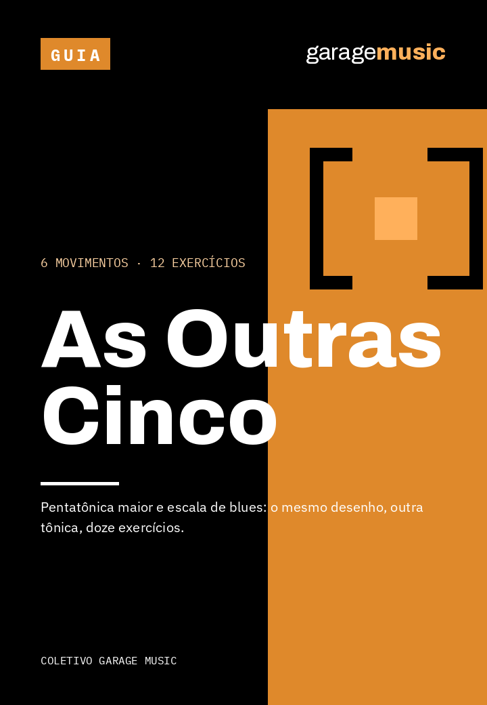

Seis guias. 219 páginas. Setenta exercícios
Biblioteca Garage Music
Os seis guias de contrabaixo da casa: escalas, walking bass, arquivo, kit e o culto sem ensaio.
R$ 127
Ver o que vem dentro




Catálogo · 6 títulos
Guias curtos em PDF, feitos a partir de execução própria. Cada um declara o que entrega e o que não entrega, e traz o inventário contado no arquivo — não estimado.
Comprar em conjunto
Seis guias. 219 páginas. Setenta exercícios
Os seis guias de contrabaixo da casa: escalas, walking bass, arquivo, kit e o culto sem ensaio.


Avulsos
Cinco formas. Dez exercícios. Seis réguas
A pentatônica menor no contrabaixo: cinco formas no braço e dez exercícios com alvo.
Duas pentatônicas. Doze exercícios. Zero desenho novo
Pentatônica maior e escala de blues: o mesmo desenho, outra tônica, doze exercícios.
Quatro tempos. Três caminhos. Doze exercícios
Walking bass a partir da cifra: o esqueleto do compasso e doze exercícios com alvo.
Cinco campos. Três estados. Cinco pastas
Nomear, versionar e recuperar projeto de áudio: cinco campos, três estados, doze exercícios.
Sete categorias. Cinco falhas. Doze exercícios
O kit, os cinco modos de falha e o teste de dez minutos antes de sair de casa.
Seis movimentos. Doze exercícios. Cinco sinais
Decidir a linha de baixo no culto, em tempo real: seis movimentos e doze exercícios.